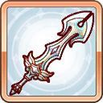
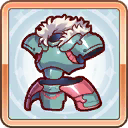
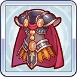
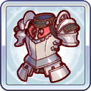
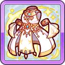
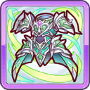
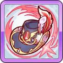
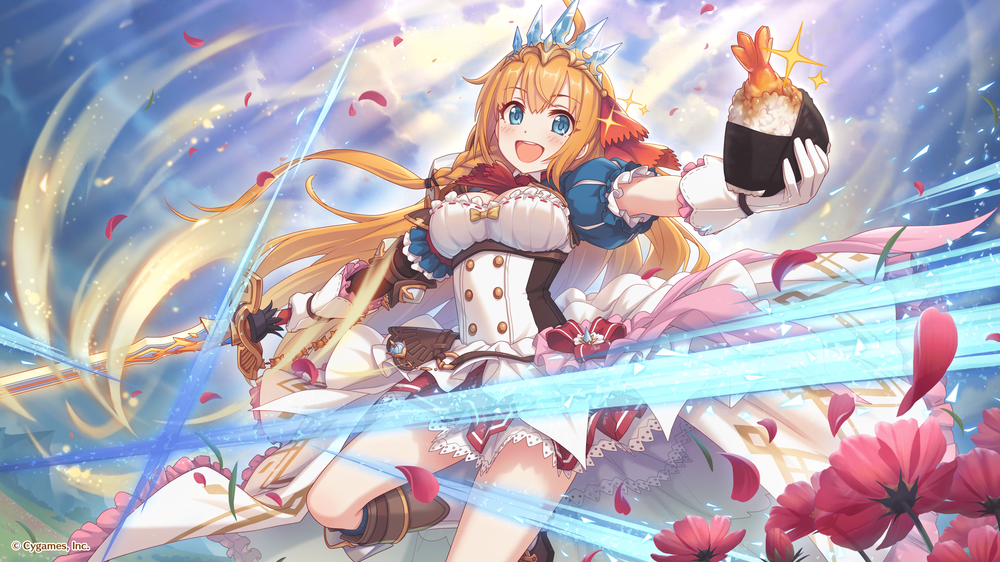

목차
캐릭터 프로필
|
페코린느
プコリーヌ |
|
| 신장 | 156cm |
| 체중 | 46kg |
| 나이 | 17세 |
| 생일 | 3월 31일 |
| 혈액형 | O형 |
| 종족 | 휴먼 |
| 길드 | 미식전 |
| 취미 | 맛집 탐방, 요리하기 |
| CV | M.A.O |
| 레어도 | ★☆☆☆☆ |
| 메모리 피스 입수처 |
메인 퀘스트 HARD
3-1, 7-1, 17-1 |
개요
프린세스 커넥트! Re:Dive의 타이틀 히로인이자 길드 미식전의 길드 마스터.페코린느라는 이름은 본명이 아니고, 배고파하는 모습(배고픈 모습을 일본어로 '페코페코(ぺこぺこ)'라 표현)을 자주 보여줘서 콧코로가 붙여줬다. 때문에 본명이 아니라 별명이다.
머리카락은 일러스트에서 오렌지빛으로 묘사되지만, 메인 스토리에서 금발이라고 언급되는 장면이 있다.
스토리에서 언제나 배고파 하는 모습이 자주 나오는데, 이 때문인지는 몰라도 식사량이 타인과 다르게 엄청나다. 이는 자신이 사용하는 『왕가의 장비』의 패널티가 에너지 소모가 그 이유. 때문에 일반인이 생각하는 것과는 차원이 다른 섭취량을 필요로 하며, 때때로 동물 뿐만이 아니라 마물의 고기도 섭취하는 모습을 보여주거나 직접 식재료를 조달하여 조리하기도 하지만 가끔 상상을 초월하는 요리를 보여준다.
직접 식재료를 조달하여 조리하기도 하지만 가끔 상상을 초월하는 요리를 보여준다.
길드
맛집 탐방 전문 길드【미식전】의 길드 마스터.주인공, 콧코로, 캬루와 함께 매일 최고의 식재료를 찾아 던전을 탐사한다.
평소에도 매일 밤 저녁식사를 같이 하는 사이 좋은 길드.
전투 시 특별 대화 이벤트가 있는 캐릭터
장비 일람
1. 공통 장비
RANK1 ~ RANK9
| RANK1 | |||||

|

|

|
|

|
|
| RANK2 | |||||
|  |

|

|
|
RANK3 | |

|

|
 |
|

|

|
| RANK4 | |||||

|

|

|
|

|
|
| RANK5 | |||||

|

|
 |
|

|

|
| RANK6 | |||||

|

|
 |
|

|

|
| RANK7 | |||||

|

|

|
|
|
|
| RANK8 | |||||

|
|

|

|

|
|
| RANK9 | |||||

|
|

|

|
|
|
RANK10 ~
| RANK10 | |||||

|
|

|

|

|
|
| RANK11 | |||||

|
|

|

|

|

|
| RANK12 | |||||

|
|
 |

|
|
|
| RANK13 | |||||

|
|

|

|

|
|
| RANK14 | |||||

|
|
 |  |

|
|
2. 전용 장비
| 프린세스 소드 | ||||||
|
페코린느가 사용하는『왕가의 장비』의 본래 모습.
원래 강력한 무기이지만, 잠들어있던 힘이 해방되는 것만으로 한층 더 무시무시한 힘을 발휘한다. |
||||||
| 강화 스킬 | 런치 타임+ | |||||
| 강화 내용 |
자신의 마법 방어력을 (중) 상승시키고 HP를 (대)만큼 회복시키며,
자기자신에게 물리/마법 흡수 배리어를 전개한다. |
|||||
| 레벨 | 물리 방어력 | 마법 방어력 | 회복력 상승 | |||
| Lv1 | 10 | 9 | 5 | |||
| Lv30 | 25 | 23 | 13 | |||
| Lv50 | 35 | 32 | 18 | |||
| Lv70 | 45 | 41 | 23 | |||
| Lv90 | 55 | 50 | 28 | |||
| Lv110 | 65 | 59 | 33 | |||
| Lv130 | 75 | 68 | 38 | |||
| Lv140 | 80 | 72 | 40 | |||
유니온 버스트(UB)
1. 프린세스 스트라이크

|
|
| 스킬 설명 |
전방의 적 하나에게 물리 (대) 데미지를 주며, 자신의 물리 방어력과 마법 방어력을 (대) 만큼 상승시킨다. |
| 스킬 효과 |
적 하나에게 (대) 의 물리 데미지
자신의 물리 방어력 (중) 증가 자신의 마법 방어력 (중) 증가 |
|
이 스킬의 용도는 바로 물리/마법 방어력 상승. 데미지는 덤이다.
상승폭이 엄청나기 때문에(Lv60에 100 전후)메인 퀘스트에서 웨이브로 누적된 데미지 때문에 혹시나 모를 폭사를 막아주는 고마운 스킬. 방어 버프 계산식은 (스킬Lv+1)×1.8(소수점은 버림) 보통 모니카와 콧코로 같은 서포터가 가진 공속 버프를 받고 나서 UB를 발동하는 것이 기본이지만 페코린느는 공격받기 전에 먼저 발동하는 게 좋다.다음으로, 데미지가 적은 게 흠이지만 탱커치고 UB에 데미지가 있는 캐릭터는 의외로 적기 때문에 다른 캐릭터들에 비해 메리트가 있다. 동일한 버프계열 UB를 가진 캐릭터로는 노조미가 있다. 페코린느는 데미지가 있고, 노조미는 데미지가 없는 대신에 도발과 공격력 버프. 탱커 수와 딜러에 따라 사용처를 확실히 하자. |
|
2. 프린세스 발리언트
| 스킬 설명 |
전방의 적 하나에게 물리 (특대) 데미지를 주며, 자신의 물리 방어력과 마법 방어력을 (특대), 그리고 물리 공격력을 (중) 만큼 증가시킨다. 또한, 물리 공격력 증가 버프는 남은 HP가 많을 수록 그 수치가 더욱 더 상승한다. |
| 스킬 효과 |
적 하나에게 (특대) 의 물리 데미지
자신의 물리 방어력 (특대) 증가 자신의 마법 방어력 (특대) 증가 자신의 물리 공격력 (중) 증가 |
|
방어력 상승 버프의 효과가 (스킬Lv+1)×2.4으로 증가.
리마의 UB와 상승폭이 동일하다. 마법 방어력도 동일하게 상승하므로 ☆6 순수 방어력도 엄청나게 된다. Lv139, 14랭크(4부위), 전장Lv140, 인연12랭크까지 만들었다면 UB로 물방이 1,040, 마방이 895나 오르는 진풍경을 볼 수 있다. 대폭 상승한 공격력 덕분에 Lv139, 14랭크 시점에서 방어력을 최저치까지 깎은 노버프 상태 적에게 사용하면 5만을 넘기는 데미지가 나오기도 한다. 크리티컬까지 박힌다면 7만을 상회하는 데미지를 볼 기회도 적지 않다고. |
|
스킬
1. 런치 타임
| 사용 조건 | RANK2 이상 |
| 스킬 설명 |
자신의 마법 방어력을 (중) 증가시키며, 동시에 HP를 (중) 회복한다. |
| 스킬 효과 (전장 미착용) |
자신의 마법 방어력 (중) 증가
자신의 HP (중) 회복 |
| 스킬 효과 (전장 착용) |
자신의 마법 방어력 (중) 증가
자신의 HP (대) 회복 자기자신에게 물리/마법 흡수 배리어 전개 |
|
페코린느를 대표하는 스킬.
주먹밥을 꺼내어 먹음으로써 HP를 회복과 동시에 마방도 올려준다. 마법 방어력 버프 수치는 다음과 같이 계산한다. 전용장비 없음 : (스킬Lv+1)×0.8 전용장비 있음 : (스킬Lv+1)×1 회복량은 대략 최대 HP의 10% 정도이며, 버프에 따라 더 상승한다. UB로 캔슬하려면 주먹밥을 먹고 회복치가 나왔을 때. |
|
2. 폴 슬래시
| 사용 조건 | RANK4 이상 |
| 스킬 설명 | 전방의 적 하나에게 물리 (중) 데미지를 부여한다. |
| 스킬 효과 | 적 하나에게 물리 (중) 데미지 |
|
점프하여 체중을 실어 공격하는 평범한 스킬.
UB와의 조합으로 탱커 중에선 공격 횟수가 많기 때문에 보스전에선 장기전으로 갈 수록 전체적인 파티 기여도가 높다. |
|
EX스킬
1. 프린세스 포스
| 사용 조건 | RANK7 이상 |
| 스킬 설명 | 전투 시작 시 자신의 최대 HP를 (중) 증가시킨다. |
| 스킬 효과 | 자신의 최대 HP (중) 증가 |
|
자신의 HP를 (스킬Lv+1)×75 상승시키는 EX스킬.
|
|
2. 프린세스 포스+
| 사용 조건 | RANK7 & ☆5 이상 |
| 스킬 설명 | 전투 시작 시 자신의 최대 HP를 (대) 증가시킨다. |
| 스킬 효과 | 자신의 최대 HP (대) 증가 |
|
자신의 HP를 {(스킬Lv+1)×75}+1200 상승시키는 EX스킬.
|
|
행동 패턴
| 시작 |


|
| 로테이션 |

|
캐릭터 순서
| 전열 | ||||||
| 뒤 |
|
|
앞 | |||
전 캐릭터를 통틀어도 가장 높은 HP와 스킬을 이용한 HP 회복, 그리고 뛰어난 방어력 버프로 압도적인 탱킹 능력을 가지고 있다.
캐릭터 스토리
※ 페코린느(여름) 캐릭터와 능력치 보너스를 공유합니다.| 화수 | 제목 | 능력치 보너스 |
| 제1화 | 재회의 밥 냄새 | - |
| 제2화 | 맛있는 음식 지참은 대환영! | HP+150 |
| 제3화 | 행복을 낚는 바늘과 줄 | HP+150 |
| 제4화 | 절 아시겠어요? | HP+300 |
| 제5화 | 여행길의 바비큐 | HP+400 |
| 제6화 | 길드 설립 Let's Go~! | HP+400 / 물리 방어력+4 |
| 제7화 | 오늘의 맛 잊지 않을 거예요♪ | HP+400 / 물리 방어력+4 |
| 제8화 | 당신이 가르쳐 준 행복 | HP+400 / 물리 방어력+6 / 마법 방어력+4 |
| 제9화 | 데이트 같은 여행 준비 | HP+800 |
| 제10화 | 미식을 위한 산 속 탐방 | HP+800 / 물리 방어력+8 |
| 제11화 | 프린세스 나이트 | HP+800 / 물리 방어력+8 |
| 제12화 | 미래의 기사님에 대한 마음 | HP+1200 / 물리 방어력+12 / 마법 방어력+8 |
종합평가
- 초기 멤버 중에서 물리/마법 양쪽을 높은 HP와 버프로 버틸 수 있는 만능 탱커.
- 프린세스 아레나와 클랜전에선 파티를 여럿 꾸릴 필요가 있기 때문에 페코린느를 육성해두면 그만큼 편성 폭이 넓어지므로 키워도 손해보진 않는다.
- 다만 초기 레어도가 ☆1이라 재능개화에 필요한 메모리 피스의 양이 적지 않다. 메인 탱커로 사용하고 싶으면 일단 메모리 피스를 H3-1에서 10개 수집한 뒤, 여신의 보석 20개로 교환하여 ☆2로 만들고 운용하는 게 초반에는 어려움을 덜어준다.
- 최대 HP가 높은 건 좋지만 퍼센트 데미지로 공격하는 적에겐 독으로 작용하여 제대로 회복도 못한 채 리타이어하는 경우가 가끔 있다. 아무리 탱커라도 특성에 따라 일장일단이 있으니 상황에 맞춰가며 기용하자.
- 퍼센트 데미지로 공격하는 보스는 이벤트 퀘스트 쪽에 있는 편.
- RANK8 이후에 회복력과 TP 상승, 회피가 올라가는 장비를 대거 착용하기에 랭크가 올라갈 때마다 탱킹력이 점진적으로 상승한다.
【전용장비 제작 후】
- 전용 장비 덕분에 환골탈태한 수준의 탱킹력을 보여준다. 지금까지는 UB로 방어력 상승 버프를 전개하기도 전에 행동 불능에 종종 빠져서 제대로 쓰기 어려웠지만, 전용 장비를 착용함과 동시에 주먹밥의 HP 회복량이 대폭 뛰어 다른 회복 스킬의 보조가 없어도 단독으로 잘 살아남는다.
- 이런 이유로 프린세스 하트를 적정갯수 모았으면 재능개화보다 전용 장비에 우선 투자해야 하는 의견이 많다.
- 하지만, ☆3 개화 및 인연 보너스으로도 충분한 탱킹력이 따라오기 때문에 전용 장비를 먼저 만들지, ☆3을 먼저 할지는 개인의 취향에 맞춰서.
- 솔로 탱킹은 물리/마법 모두 우수한 편. 하지만 그 탱킹의 대부분을 주먹밥에 의지해서 막상 제대로 못 먹으면 그렇게 단단한 수준은 아니다. 특히 스턴 혹은 구속 스킬이 범람하는 아레나에선 쉽게 쓰러질 때가 많다. 특히 천적인 노조미한테.
【☆6 개화 이후】
- 재능개화로 스테이터스가 비약적으로 증가하여 업데이트 당시인 Lv139/RANK14(4부위)/전용장비Lv140 기준으론 이렇다.
- HP : 49,444 + EX스킬(+11,700) = 61,444
- 물리 방어력 : 704 (☆5 전장30 리마가 637 -EX스킬 없을 때)
- 마법 방어력 : 559 (☆5 전장30 쿠우카가 567 -EX스킬 없을 때)
- EX스킬에 특화된 탱커에게는 조금 뒤쳐질지도 모르나 전체 캐릭터를 통틀어 이 정도의 정신 나간 HP 수치를 자랑하는 캐릭터는 페코린느 밖에 없다.
- UB가 공격형으로 전환된 덕분에 탱커 중에선 솜방망이 수준에서 비교적 준 물딜러 정도로 화력이 올라갔다. 게다가 여기에 버프가 더해지면 주먹밥만으로 HP를 2만 이상이나 회복하는 저력을 보여주기도.
- 종합하면 순수한 성능 강화형 탱커. 일부 방해스킬로 주먹밥을 먹지 못하면 제대로 힘을 못 쓰는 건 변함없지만, 기본 능력치가 대폭 상승한 것이 장식은 아니고 UB 자체의 성능도 좋아져서 주먹밥을 못 먹는다고 예전처럼 쉽게 쓰러지진 않는다.
- 이 때문에 역으로 상대를 할 때 주먹밥을 떨어뜨리지 않으면 도통 쓰러질 생각을 안 한다. UB를 한 번 쓰고 나면 4자리 수의 방어력과 6만 이상의 HP, 거기다가 2만 이상의 HP 회복력이 더해지는데, 리마처럼 일부 행동 불능 스킬을 가진 캐릭터가 있으면 모를까...그런 캐릭터가 없는 경우엔 하루종일 주먹밥을 먹으면서 버티는 환장할 광경을 지켜볼 수 있다.
캐릭터 운용과 편성
- 아무리 최고의 HP 수치를 가지고 있다고 해도, 이것 하나만 믿고 가기엔 기본 방어력이 다른 탱커들보다 높진 않다. 게임 내 프로필에서도 알 수 있듯이 HP를 토대로 삼아, 한계까지 전선을 유지하는 동안 다른 캐릭터들이 전장을 정리하게 만드는 게 본래 역할. 페코린느에게 독보적인 탱커로서의 큰 기대는 안 하는 편이 낫다.
- UB를 아끼지 말고 적극적으로 사용해 방어를 굳히는 것이 좋다. UB 버프가 지속되는 동안은 정말 단단하다.
- 힐러가 제대로 육성되어 있지 않을 땐 주먹밥의 회복력 만으론 부족하여 쉽게 빈사 상태에 이르기도 한다. 이럴 땐 다른 탱커나 서브 탱커를 편성해주고, 파티 자체의 화력을 올리는 것을 고려해보자. 심플한 성능인 만큼 플레이어의 센스에 좌우된다.
- 탱커 중에선 공격 스킬이 2개 있어 비교적 화력을 내기 좋아, 1탱 전법으로 갈 경우 페코린느가 견딜 수만 있으면 앞에 세워놓는 걸로 딜링 평균을 높일 수 있다.
- 파티 편성에 따라선 쥰을 넣었을 때 전체 화력이 더 높기도 하니 상황을 잘 보자.
- VH 던전 보스전에서 노조미와 함께 2탱 편성을 할 땐 주의해야 한다. 시스템상 그런 건지 버그인 건지는 잘 모르겠지만, 선두에 있는 페코린느를 제쳐두고 노조미가 타겟팅된다.
- 아레나에선 선두가 아니라 2번째 위치에 배치하여 2차 방벽 같은 느낌으로 운용하는 것이 좋다. 선두 탱커가 버티는 사이에 TP를 채워놓으면 HP에 여유가 있는 상태에서 UB 버프를 받을 수 있기 때문에 오래 버티기가 가능하기 때문. 느낌상으로 말하자면 쥰을 2번째에 놓는 거랑 비슷하다고 해야 하나...
- 리마와 조합을 짜면 처음에 페코린느가 선두에 서서 디버프를 포함한 초반 러시를 막아주고, 후방에서 달려오는 리마와 선두 교대로 피해를 주먹밥으로 회복하는 전략을 연출할 수 있다. 둘 다 저(低)레어도 캐릭터들이기 때문에 캐릭터 풀이 좁은 유저라면 상대적으로 짜기 쉬운 조합.
- HP와 방어력에서 추산할 수 있는 페코린느의 대략적인 탱킹 능력은 물리 기준으로 쥰과 노조미 사이, 마법 기준으로 노조미보다 조금 높은 수준이다. 단순 능력치만 봤을 때 절대로 약한 건 아니지만, 만약 아레나에서 자주 진다면 자신도 모르는 사이 디버프에 당한 것이 아닐까 천천히 되짚어보자.
- 전용 장비를 착용하면 성능이 비약적으로 올라가서 선두에 세워도 준수한 탱커가 된다. 노조미가 범위 스턴과 도발로 적을 혼란시키면서 페코린느와 함께 서로 힘을 합쳐 라인을 붕괴시키지 않는 심플한 2인 조합으로 운용 가능.
재능개화
1. ★3 일러스트
2. ★6 일러스트
3. ★6 개방 퀘스트
준비중4. ★6 스테이터스 변화
| 상승 스테이터스 | |
| 인연 랭크 최대 12로 확장 | HP+5734 |
| 물리 공격력+343 | 물리 방어력+98 |
| 마법 방어력+94 | 회복량 상승+55 |
| 아이템 장착 보너스 | ||
| 프린세스 오브(합계) | 메모리 피스 | 퓨어 메모리 피스 |
|
물리 방어력+20
마법 방어력+20 |
HP+1000
물리 방어력+10 마법 방어력+10 |
HP+1500
물리 방어력+5 마법 방어력+5 회복량 상승+5 |
기타
1. 생일 기념 일러스트